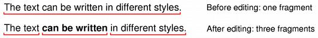

QTextFragment Class
The QTextFragment class holds a piece of text in a QTextDocument with a single QTextCharFormat. More...
| Header: | #include <QTextFragment> |
| CMake: | find_package(Qt6 REQUIRED COMPONENTS Gui) target_link_libraries(mytarget PRIVATE Qt6::Gui) |
| qmake: | QT += gui |
- List of all members, including inherited members
- QTextFragment is part of Rich Text Processing APIs.
Note: All functions in this class are reentrant.
Public Functions
| QTextFragment() | |
| QTextFragment(const QTextFragment &other) | |
| QTextCharFormat | charFormat() const |
| int | charFormatIndex() const |
| bool | contains(int position) const |
| QList<QGlyphRun> | glyphRuns(int pos = -1, int len = -1) const |
| bool | isValid() const |
| int | length() const |
| int | position() const |
| QString | text() const |
| bool | operator!=(const QTextFragment &other) const |
| bool | operator<(const QTextFragment &other) const |
| QTextFragment & | operator=(const QTextFragment &other) |
| bool | operator==(const QTextFragment &other) const |
Detailed Description
A text fragment describes a piece of text that is stored with a single character format. Text in which the character format changes can be represented by sequences of text fragments with different formats.
If the user edits the text in a fragment and introduces a different character format, the fragment's text will be split at each point where the format changes, and new fragments will be created. For example, changing the style of some text in the middle of a sentence will cause the fragment to be broken into three separate fragments: the first and third with the same format as before, and the second with the new style. The first fragment will contain the text from the beginning of the sentence, the second will contain the text from the middle, and the third takes the text from the end of the sentence.

A fragment's text and character format can be obtained with the text() and charFormat() functions. The length() function gives the length of the text in the fragment. position() gives the position in the document of the start of the fragment. To determine whether the fragment contains a particular position within the document, use the contains() function.
See also QTextDocument and Rich Text Document Structure.
Member Function Documentation
QTextFragment::QTextFragment()
Creates a new empty text fragment.
QTextFragment::QTextFragment(const QTextFragment &other)
Copies the content (text and format) of the other text fragment to this text fragment.
QTextCharFormat QTextFragment::charFormat() const
Returns the text fragment's character format.
See also text().
int QTextFragment::charFormatIndex() const
Returns an index into the document's internal list of character formats for the text fragment's character format.
See also QTextDocument::allFormats().
bool QTextFragment::contains(int position) const
Returns true if the text fragment contains the text at the given position in the document; otherwise returns false.
QList<QGlyphRun> QTextFragment::glyphRuns(int pos = -1, int len = -1) const
Returns the glyphs corresponding to len characters of this text fragment starting at position pos. The positions of the glyphs are relative to the position of the QTextBlock's layout.
If pos is less than zero, it will default to the start of the QTextFragment. If len is less than zero, it will default to the length of the fragment.
See also QGlyphRun, QTextBlock::layout(), QTextLayout::position(), and QPainter::drawGlyphRun().
bool QTextFragment::isValid() const
Returns true if this is a valid text fragment (i.e. has a valid position in a document); otherwise returns false.
int QTextFragment::length() const
Returns the number of characters in the text fragment.
See also text().
int QTextFragment::position() const
Returns the position of this text fragment in the document.
QString QTextFragment::text() const
Returns the text fragment's as plain text.
See also length() and charFormat().
bool QTextFragment::operator!=(const QTextFragment &other) const
Returns true if this text fragment is different (at a different position) from the other text fragment; otherwise returns false.
bool QTextFragment::operator<(const QTextFragment &other) const
Returns true if this text fragment appears earlier in the document than the other text fragment; otherwise returns false.
QTextFragment &QTextFragment::operator=(const QTextFragment &other)
Assigns the content (text and format) of the other text fragment to this text fragment.
bool QTextFragment::operator==(const QTextFragment &other) const
Returns true if this text fragment is the same (at the same position) as the other text fragment; otherwise returns false.